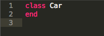
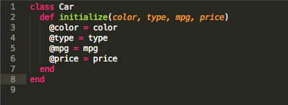
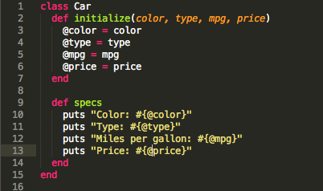
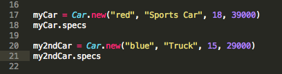
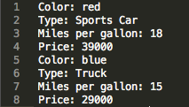
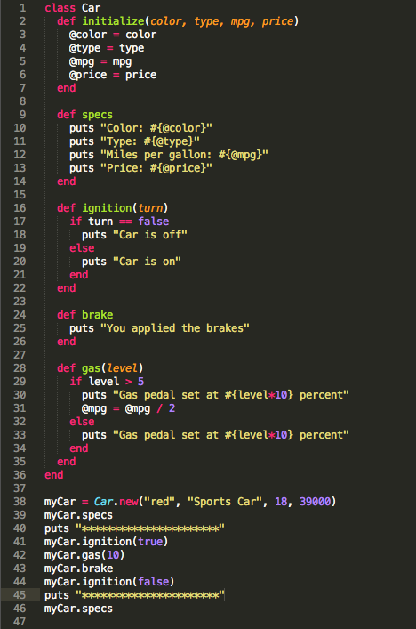
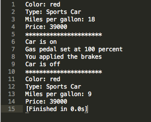

May
Week 5 Technical Blog - Classes
When thinking about object oriented programming, everything in Ruby is an object. Strings, integers, boolean values, and even classes are considered objects in Ruby. But why are classes so important to object oriented programming?
Basic OO programming rely on the following concepts.
- Abstraction - Modeling classes appropriate to the problem.
- Polymorphism - Using operator or function in different ways for different data input.
- Encapsulation - Hides the details of a class from other objects.
- Inheritance - Form new classes using classes that have already been defined.
An object oriented program involves classes and objects. Classes is a blueprint or prototype from which objects are created. These objects are often used to model real world objects that you find in everyday life.
Lets try an example. Say we wanted to create an object called Car class. What would we want to know about the car? Color? Type? Miles per gallon? Price?
You start building a class using the following syntax
When Ruby creates a new object, it looks for the method initialize to setup default values. You can also pass in arguments to the method to use within the class. Create the initialize method. Pass in the different properties of the car and create instance variables that will store the properties. I will talk about what instance variables are once we have things setup properly.
Next lets create another method which allows you to see the stored instance variables.
Before we continue, what are instance variables? Instance variables are variables that are bound to the instance of the class. Every instance of a class has a different set of instance variables. These variables will exist as long as the instance is live. Take our next few lines of code. We created two new instances of Car. Each instance will have its own stored properties and won't intermingle with each other.
Here's what the results will look like
So why use instance variables? If you want to protect your data from other instances or objects, use an instance variable to lock everything within the instance. Also all instance variables are available to all methods inside the class. Its unnecessary to pass in the instance variable to a method that is defined inside the class.
Back to our Car class...now that you understand how to create a new class, create instance variables and how they are used, lets create some additional functionality with our class.
What other functions would a car have? Brakes? on/off switch? Apply gas? Lets create it.
Here's the results
As you can see, building a class allows you to organize your code to mimic real world objects. It could be a car, a phone, or something that can automatically access a database and allow you to read, write, and delete records. As long as you know how to create a new instance of the class, what methods it contain, and how to call them. You really dont need to know exactly how the code works (unless something is broken in the code). This helps frees you from having to manage the functionality of that part of the program.
Resources
Zetcode.com - Object Oriented Programming in Ruby
Tutorialspoint.com - Ruby Classes and Object
About.com - Ruby Instance Variables